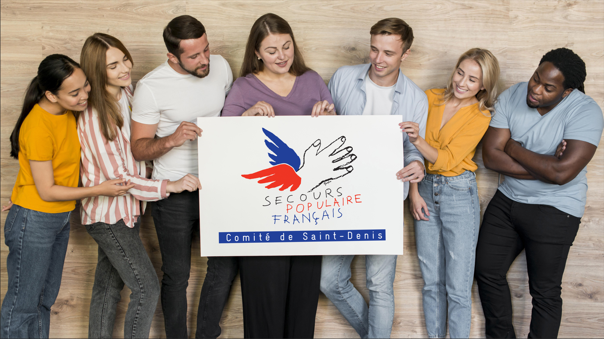
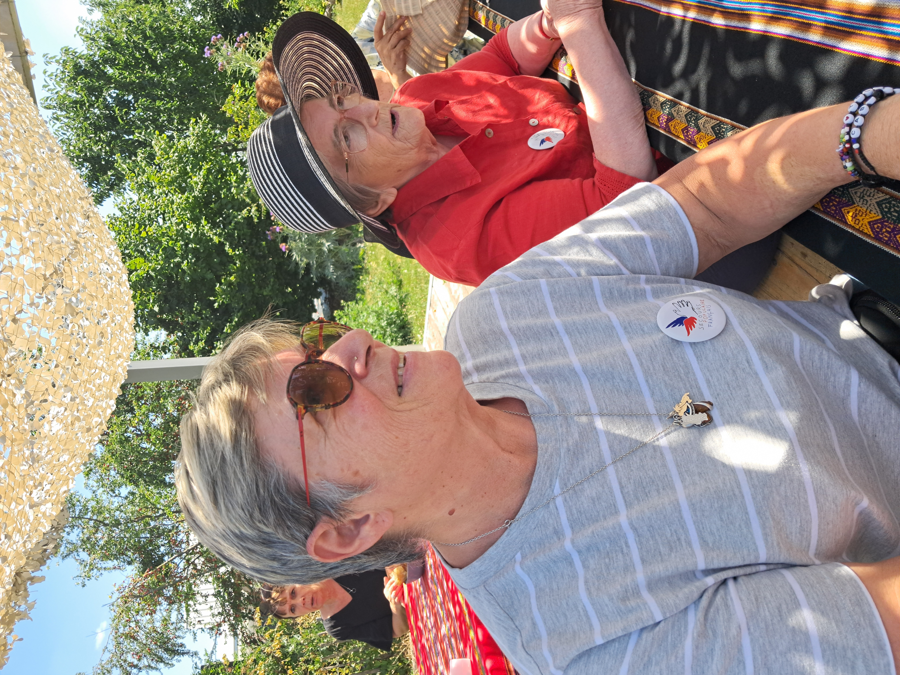
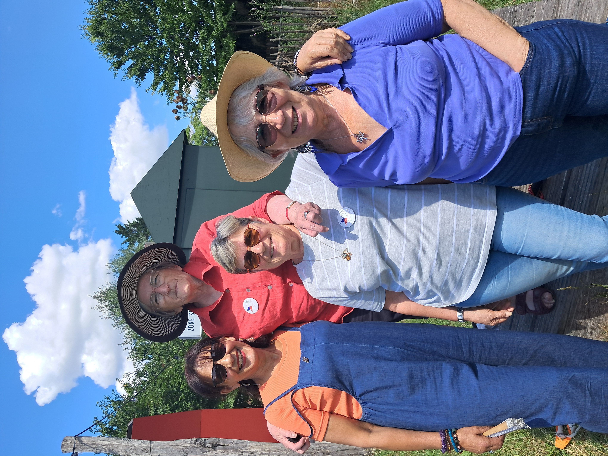
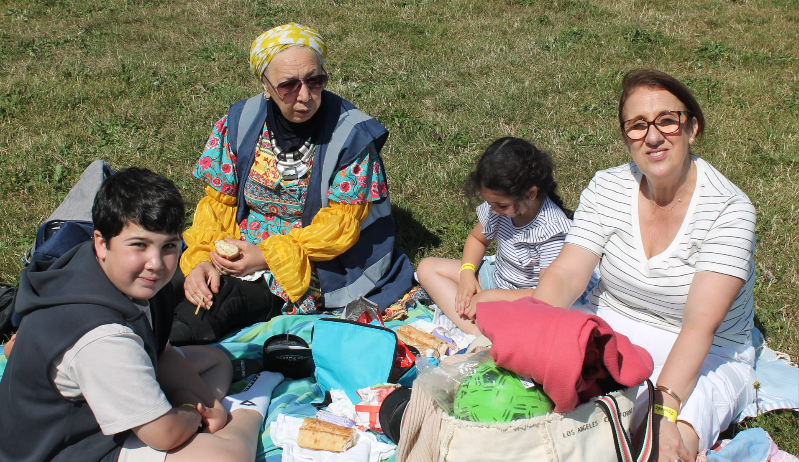
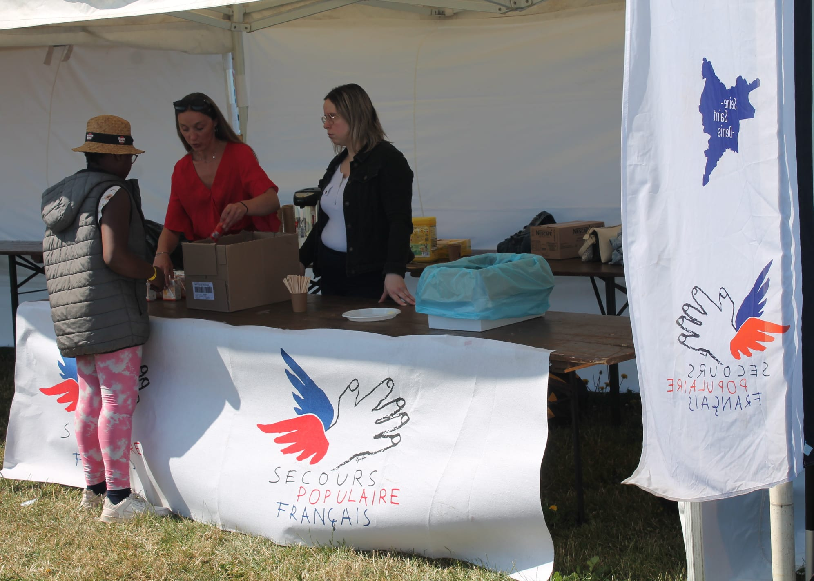

Notre comité

Depuis sa création en 1945, notre comité agit au cœur de Saint-Denis pour faire vivre la solidarité au quotidien. Installé à la Bourse du Travail, nous venons en aide aux personnes en difficulté sans distinction d’origine, d’âge ou de situation. Depuis de nombreuses années, le Secours Populaire français est un pilier essentiel de la solidarité en France, et notre comité de Saint-Denis en est le fidèle reflet. Engagés quotidiennement sur le terrain, nous nous battons sans relâche contre la pauvreté et l’exclusion dans notre ville. Chaque jour, nos bénévoles dévoués agissent pour que chacun puisse accéder à ses droits fondamentaux : une aide alimentaire digne, un accompagnement matériel, l’accès aux soins, à la culture, aux loisirs et aux vacances, mais aussi une oreille attentive et un soutien moral. Enracinés au cœur de Saint-Denis, nous œuvrons avec passion pour faire vivre la devise du Secours Populaire : "Tout ce qui est humain est nôtre", en tissant un lien de solidarité durable et en apportant un soutien concret à celles et ceux qui en ont le plus besoin. Nous sommes fiers de notre action locale et de l’impact que nous avons, grâce à la générosité de nos donateurs et l’engagement de nos bénévoles, sur la vie des Dionysiens.
Nos objectifs

Au Secours Populaire de Saint-Denis, nos actions sont guidées par des objectifs clairs et une vision forte : lutter activement contre toutes les formes de pauvreté et d’exclusion. Nous nous engageons à offrir une aide d’urgence et un accompagnement sur le long terme pour garantir l’accès aux droits fondamentaux de chacun : alimentation, logement, santé, éducation, culture, loisirs et dignité. Notre ambition est de renforcer le lien social, de favoriser l’autonomie des personnes aidées et de créer une communauté solidaire où chacun peut trouver sa place. Grâce à la mobilisation de nos bénévoles et à la générosité de nos donateurs, nous aspirons à construire une société plus juste, plus fraternelle et plus juste, où chacun peut s’épanouir et vivre dans la dignité, pour toutes et tous les personnes que nous aidons à Saint-Denis.
Notre équipe / Gallerie



